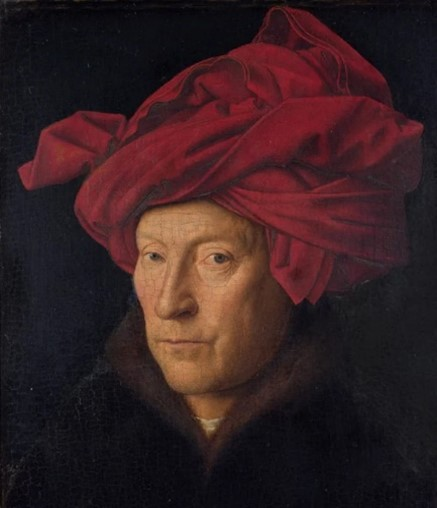
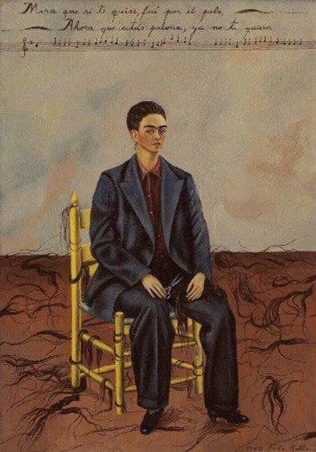
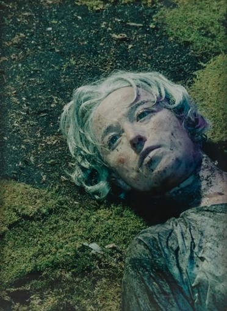
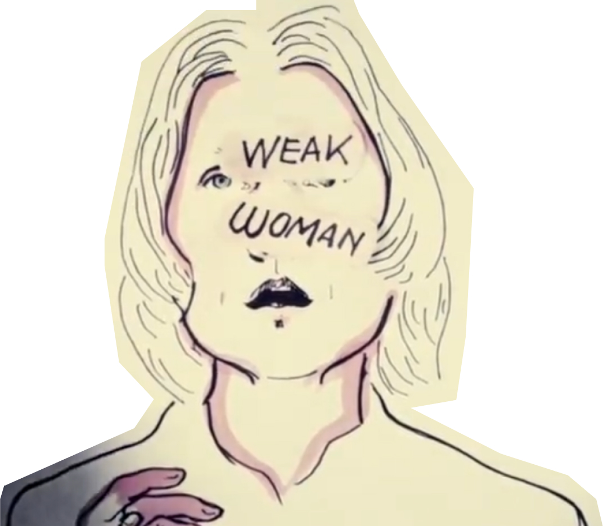

Make A Portrait of Childhood Self
2024, Interactive Installation
An interactive installation that helps people embrace their vulnerability through self-portrait making. Guided by childhood memories, participants co-create a self-portrait with the system — combining webcam capture, generative text, and printed output — as a way of fostering self-reflection and self-acceptance.


Starting Point: Self-Portrait
right scroll >>


Fig.1 (left) "Man in a Red Turban", Jan van Eyck, 1433.
Fig.2 (right) "Self-portrait with cropped hair", Kahlo Frida, 1940.
Fig.2 (right) "Self-portrait with cropped hair", Kahlo Frida, 1940.
Fascinating art form
Painting, with its extensive history, stands out as a
particularly popular medium for self-portraits. "Man in
a Red Turban" by Jan van Eyck (1433) (Fig. 1) is often
considered one of the earliest examples of a panel
self-portrait.[9] The portrait is notable for its
remarkable attention to detail, capturing realistic
textures like the turban, and the meticulous portrayal
of the man's facial features.[15]
Frida's "Self-portrait with cropped hair" (1940) (Fig. 2) is very emotionally expressive, serving as a format for artists to convey their identities, momentary emotions, or engage in social commentary. In this particular self-portrait, Kahlo diverges from her typical depictions, shedding the feminine attributes often present in her work, such as traditional embroidered Tehuana dresses or flowers in her hair. Instead, she boldly presents herself in a loose-fitting man's suit with a short-cropped haircut. The floor is strewn with locks of her hair, and she holds a pair of shears across her lap. This androgynous portrayal is thought to reflect Kahlo's bisexuality and her response to a divorce from her husband.[23]
Frida's "Self-portrait with cropped hair" (1940) (Fig. 2) is very emotionally expressive, serving as a format for artists to convey their identities, momentary emotions, or engage in social commentary. In this particular self-portrait, Kahlo diverges from her typical depictions, shedding the feminine attributes often present in her work, such as traditional embroidered Tehuana dresses or flowers in her hair. Instead, she boldly presents herself in a loose-fitting man's suit with a short-cropped haircut. The floor is strewn with locks of her hair, and she holds a pair of shears across her lap. This androgynous portrayal is thought to reflect Kahlo's bisexuality and her response to a divorce from her husband.[23]

